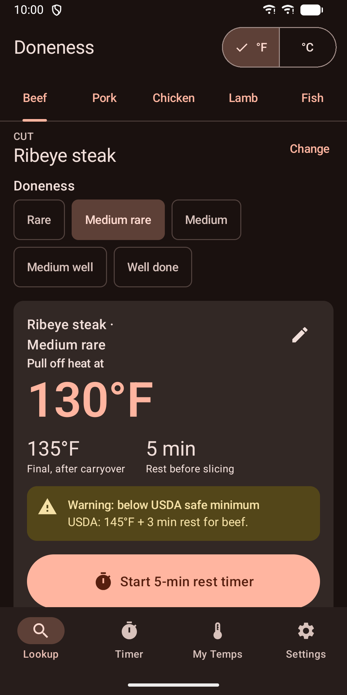
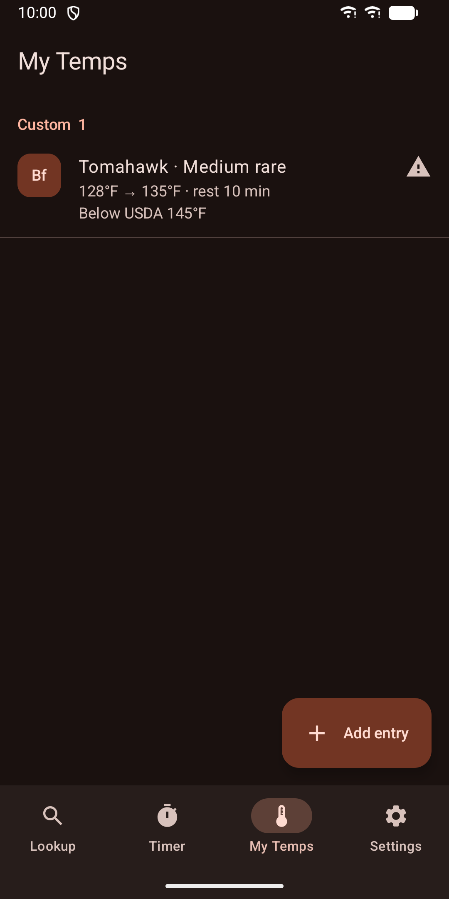

Steak Doneness Chart & Timer
Pull temps for steak, pork, chicken, lamb and fish, with a rest and flip timer.







About
Know exactly when to take your meat off the heat. Pick the meat, the cut and how you like it done. You get three numbers in big type: - Pull temp: when to take it off the heat - Final temp: where it ends up after carryover - Rest time: how long to let it sit before slicing Then tap one button to start the rest timer. SAFETY WARNINGS Chef-style temps, such as a medium rare burger or a juicy chicken breast, can be below the USDA safe minimum. The app still shows them, but marks them with a clear warning and shows the USDA minimum next to them. MAKE IT YOURS Like your ribeye a little rarer? Edit the temps for any built-in cut. Add your own cuts, like picanha or pulled pork shoulder. Reset any edit to the default with one tap. Custom temps get the same USDA warning. ONE SIMPLE TIMER Rest presets from 3 to 20 minutes and flip presets from 1 to 4 minutes. An alarm sounds when it ends, and the screen stays on while it counts down. Leaving the app? Tap Set in Clock app and your phone's Clock app takes over the countdown. HOME-SCREEN WIDGET Your last lookup stays on your home screen: cut, doneness, pull temp and final temp. Tap it to jump back in. BUILT FOR THE GRILL - Big text and large buttons for greasy fingers - °F or °C, remembered - Light and dark theme that follows your phone - Phone and tablet layouts; on tablets the chart and timer sit side by side - Screen reader support PRIVACY - The app has no internet permission, so it cannot go online - No account, no tracking, no analytics - Your custom temps are included in your Android backup. Nothing else leaves the device. PURCHASE The app is a paid download. All features are included after purchase. There are no in-app purchases. Covers beef, pork, chicken, lamb and fish. Safe minimums are based on USDA FSIS. Temperatures are guidance only; always use a calibrated thermometer.
Guides
- Safe Internal Temperature Chart for Meat and Fish USDA minimum internal temperatures for beef, pork, lamb, chicken and fish, plus how chef-style doneness compares.
- Carryover Cooking: When to Pull Steak Off the Heat How much a steak or roast rises while resting, with a worked example for finding your pull temperature in °F and °C.
- Steak Doneness Temperature Chart (°F and °C) Pull and final temperatures for rare to well done steak in °F and °C, with rest times and the USDA safe minimum explained.